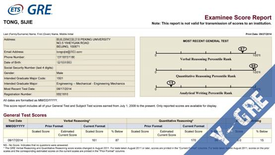
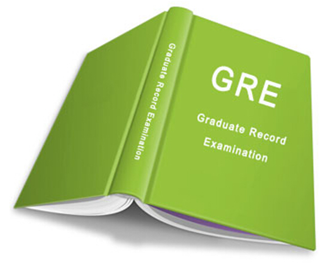
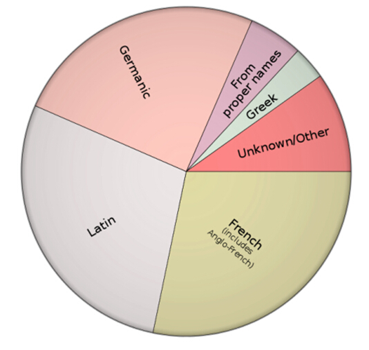
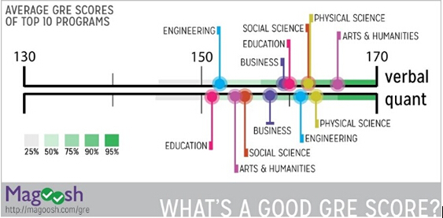
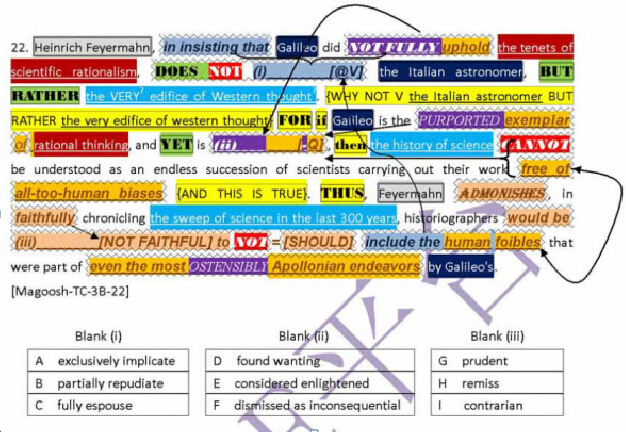
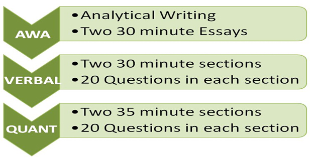
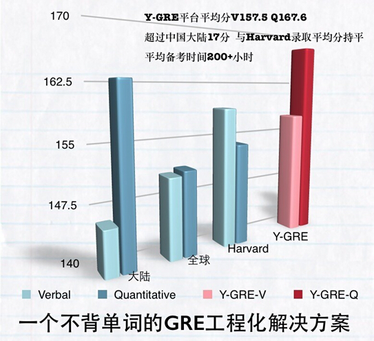

云英语
云英语：因学术而改变

考试时间：2014.08.17（浙大紫金港考场）
考试分数：V161 Q170 AW3.0
备考时间：VB100h + Y-GRE200h
终于在这个暑假结束了漫长的GRE征程，虽然Verbal161的分数并非特别高，但还是有一些自己特别的经验与体会，希望写出来能够与大家分享。
Analytical Writing:
只在考前练了几次。准备时要重点看OG的AW部分，分析上面的范文，看看那些高分作文的优点在哪儿，它们是如何达到ETS的要求的。
Quantitative Reasoning：
GRE数学的难度顶多是初中数学的水平，备考时把OG过一遍，认识一些可能在题干中出现的生词就行了。考试时间绰绰有余，把每道题目认真地理解清楚后再做解答，基本上就能保证正确了。
Verbal Reasoning:
这一块是GRE备考过程中的重头戏，难度大，但是提升空间也很大。身为母语非英语的人群，很难具备英语母语人士坚实的语言基础（当然也不排除一些独具天赋的人能够掌握与母语者相当的语言实力），并且备考时间有限，要想获得进步，就必须在提升语言实力基础的同时采取一定的技术策略，下面也将从这两方面来说。
英语基础的一个重要方面就是词汇。从高中毕业所掌握的3000词汇量，要拓展到GRE考试所需的20000词汇量，仅仅靠死记硬背显然是不行的。在接触了云英语（Y-English.org）的VB词汇建造师（V-Builder）后，我逐渐掌握了以词源为基础，在词汇之间建立关联，构建词汇体系的一整套方法。词源学基于历史语言学和比较语言学，主要研究词汇的历史及其演变轨迹。而英语主要来源于拉丁语、古希腊语和日耳曼语，这三者都有一个共同的源头，即原始印欧语（Proto-Indo-European, 简称PIE）。因此，如果以PIE词基为源头，理清英语中那些分别来自拉丁语、古希腊语和日耳曼语的词根，就有助于系统化地构建词汇网络，优化记忆词汇的过程。在VB研修的过程中，李浩老师绘声绘色地讲解词汇含义、来源及演变，同时也讲授各种相关的学科知识，在潜移默化中既掌握了单词，也提升了有利于GRE考试的学科背景知识。
Fig.1 Origins of English
词源学的帮助不仅仅在于记忆单词！词典上的汉译解释，特别是在做GRE题目时，常常会发现有很大偏差而导致误解。基于词源理解词汇，能够帮助更加准确地理解在当前语境下的含义，甚至是内含的情感色彩。词源学也有助于我们在遇到生词时推测词义，保证了阅读的连贯性。例如，remit在词源上表示to send back，抽象上可以理解为减弱意，由此可以发展出"免征"、"赦免"、"恢复"等意思。
当然，并不是每个单词都有明显的词源来帮助记忆，此时可通过把同义词列在一起的方式来建立起同义词的关联网络。总之，面对庞大的词汇体系，需要尽可能地以词源、词根以及同义词为节点建立关联，构建一个网状的词汇结构。
在结束了VB词汇建造师研修后，就要进入Y-GRE平台阶段。VB词汇建造师并不是专门针对GRE考试的。在我看来，VB词汇建造师的目的更多是为了教会你并使你习惯于基于词源构建词汇网络的方法。而在Y-GRE平台上，会以题目中遇到的生词为节点，与大量的同源词、同义词建立关联。基本上在两到三个单元后，就会发现许多词汇开始重复出现，做题过程中的生词量大大减少。
在Y-GRE平台上训练的一项极为重要的技术就是预测式图景阅读。新GRE考试更多的是一门智力测试而非语言考试，因此背单词等过程虽然提高了英语基础实力，仅仅是减少了英语非母语考生由于语言因素而造成的智力测试结果的偏差。GRE更着重于考察考生预测式图景阅读的能力，尤其是对于文本填空TC（Text Completion）和阅读理解RC（Reading Comprehension）两种题型，更是要考察阅读者能否随着行文进展，不断地分析、评估和预测的能力。对于新GRE到底考什么还缺乏概念的新手们，推荐你们看下这篇入门贴《有关新GRE你不得不知道的一些事》http://legacy.y-english.org/cnosn/blog/GRE_you_donot_know.html。
所谓预测式图景阅读，即在阅读文本的过程中，充分挖掘已知文本所提供的信息，以及基于自己的阅读经验，对下文进行合理预测。在往下阅读的同时，对自己所做的预测进行修正，如果后文与自己的预测一致就能加快阅读的速度。阅读时，寻找上下文中的paraphrase，antiphrase和signal words等等，以及对应所填的空的parakey或者是antikey。所谓paraphrase，粗略地讲，即在一个语境中，意思相近的词语、词组或句子，antiphrase指的是在一个语境中，意思相反的词语、词组或句子。找到这些对应的成分有助于理清文本结构。而signal words信号词则提示前后文间的逻辑关联。在这样的阅读过程中分析清楚文本中句与句之间的关系，逐渐整合在一起形成整个图景，这样整个文本就算是读清楚了。另外，在读完题干后看选项前要对答案做出预设，然后才看选项，这样能够有效避免干扰项的影响。
Fig.2 预测式图景阅读示意
在预测式图景阅读的过程中，还有一个重要的概念是undertone，即在文本表面意思之下隐藏的"潜音"和"深意"。例如"it is assumed that"表示一种没有证据的假设，其undertone是作者认为并不是这样，或者和事实不一样，作者不认可that后的从句的内容。看到"as a rule"惯常大家都怎么做，则undertone是大家一般的做法并不正确，我们可以预测后文可能会进一步讲到正确的做法。
事实上，我们在阅读母语素材时，在潜意识里就使用了这种预测式图景阅读的方法。我们一边阅读文章，一边基于自己丰富的母语阅读经验，下意识地预测了后文会出现什么，上下文构成怎样的关系等等。而预测式图景阅读训练就是要将这种阅读技术有意识地运用到英语素材的阅读中去。
还有一点是pattern的积累。Pattern即在一些话题中经常会出现的观点、论述方法等等，也是ETS对GRE进行命题时不可回避的要素。积累pattern的目的在于熟悉某一学科中反复出现的观点以及思维结构，总结其中一些思维规律，积累一定的阅读经验从而有助于预测式图景阅读。同时，积累pattern的过程也是熟悉各种学科背景的过程。GRE虽然声称不具有学科偏向性，但是它用到的文本素材都是来自各学科学术文章，自然不可避免地涉及一些学科背景知识。虽然不具备相关学科背景依然可以通过一定的策略读懂文本，但是积累一些学科背景知识对图景式阅读是大有裨益的。例如，在自然科学语境中，常会出现客观与偏见的对立，新理论的对旧理论的兼容涵盖及发扬等pattern。熟悉这些pattern，有助于在阅读过程中进行有效地预设。
在备考GRE的过程中，阅读速度也常常成为一大问题，而要在30分钟内完成20道题目，这一问题必须得到解决。阅读速度慢多是因为以前基础阅读经验不够造成的，要想在短期内获得速度上的提升，就必须坚决贯彻预测式图景阅读的步骤。这样在前期速度也许仍然很慢，但在一段时间的训练后阅读速度能够得到显著提升。并且基于预测式图景阅读答题，基本上能够节省回文章中定位的时间。同时，对于缺乏阅读经验的人来说，在阅读过程中能否engage尤其重要。当你真正engage进去后，就不会因为时间不够用的紧张感打乱自己的方寸。
最后，感谢云英语的李老师、吴老师、子聪、泰涵和堃神，感谢你们的指导与帮助，祝云英语的事业蓬勃发展。
版权所有 2011-2015 云英语 Y-English All Rights Reserved
地址：北京市海淀区五道口华清嘉园商务会馆802
电话：400-876-3898 010-82863898 82863899 传真：010-82863897